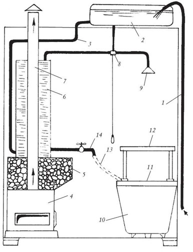
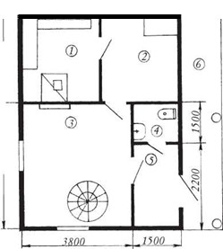
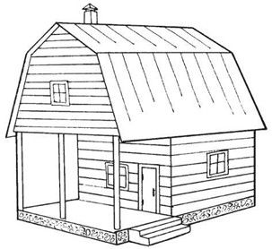
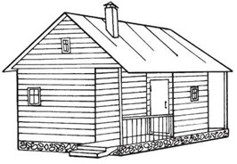

Проекты рубленой бани
Конструктивные особенности бани зависят от планировки и размера участка,
количества человек, которые будут одновременно посещать баню, а также от
финансовых возможностей владельца и некоторых других факторов.
Баня состоит
из парной площадью не менее 6-9 м2, прихожей-тамбура и комнаты для раздевания
(предбанника). Баню можно строить с душем, бассейном и комнатами для отдыха.
Самый простой проект русской бани
Этот проект (рис. 1, 2) рассчитан на
семью из 3-4 человек. Для возведения такой бани потребуется минимальное
количество строительных материалов.
Рис. 1. План русской бани для семьи из 3-4 человек (размеры даны в мм): 1 — тамбур; 2 — предбанник; 3 — моечная, совмещенная с парной; 4 — вешалка; 5 — скамья; 6 — печь; 7 — емкость для воды; 8 — полок; 9 — оконные проемы; 10 — шкафы для одежды

Рис. 2. План
парной: 1 — подача воды в напорный бак; 2 — напорный бак; 3 — подача воды в
водогрейную колонку; 4 — печь- каменка; 5 — железный ящик с камнями; 6 —
водогрейная колонка; 7 — выход горячих газов из печи; 8 — вентиль для душа;
9
— душ; 10 — ванна; 11 — деревянная решетка; 12 — съемная деревянная решетка; 13
— съемный шланг для наполнения ванны; 14 — кран подогретой воды
Проекты современной русской бани с указанием количества расходных материалов
Баня с комнатой для отдыха и душевыми кабинами
Строительный объем — 58
м3.
Площадь застройки — 34 м2.
Полезная площадь помещения — 24
м2.
Тамбур — 4 м2.
Общий вид и план такой бани представлены на рисунках 3 и 4.
Возводить
такую баню рекомендуется на фундаменте из бутобетонных или бетонных блоков.
Рис. 3. Общий вид
бани с комнатой для отдыха и душевыми кабинами
Рис. 4. План бани
с комнатой для отдыха и душевыми кабинами (размеры даны в мм): 1 — тамбур; 2 —
раздевалка; 3 — комната отдыха; 4 — туалет; 5 — душевые кабины; 6 — парная; 7 —
печь- каменка; 8 — печь для обогрева; 9 — помещение для мытья
Расходные материалы
Доски (30 х 160 мм) — 16,5-17 м3. Стропила (50 х 150
мм) — 0,6-0,7 м3. Обрешетка (50 х 50 мм) — 0,5-0,6 м3. Стойки под прогон —
0,1-0,2 м3.
Прогон — 0,3-0,4 м3.
Балки потолка (100 х 160 мм) — 0,8-0,9
м3. Доски обшивки (25 х 120 мм) — 0,7-0,8 м3.
Балки для пола (100 х 160 мм) —
0,8—0,9 м3.
Доски для пола (40 х 160 мм) — 1,2-1,3 м3.
Двери (80 х 2000
мм) — 2 штуки.
Окна (570 х 1600 мм) — 5 штук.
Шифер (1200 х 670 х 5,5 мм)
— 82-84 листа.
Баня с парной, совмещенной с моечной
Строительный объем —
90 м3.
Площадь застройки — 30 м2.
Полезная площадь — 24 м2.
Возводить
такую баню (рис. 5) рекомендуется на фундаменте из бутобетонных или бетонных
блоков.
Рис. 5. Общий вид
бани с парной, совмещенной с моечной
Расходные материалы
Доски (30 х 60 мм) — 9-9,2 м3.
Стропила (50 х 160
мм) — 0,4-0,5 м3.
Обрешетка (50 х 50 мм) — 0,4-0,5 м3. Балки потолка (100 х
160 мм) — 0,4-0,5 м3. Доски обшивки (25 х 120 мм) — 1,9-2 м3. Балки для пола
(100 х 160 мм) — 1,9-2 м3. Утеплитель — 0,4-0,5 м3.
Рубероид — 1,3—1,4
м3.
Дверь (800 х 2000 мм) — 1 штука.
Окно (570 х 1600 мм) — 1
штука.
Баня с парной, отделенной от моечной
Строительный объем — 90
м3.
Площадь застройки — 30 м2.
Полезная площадь — 25 м2.
Возводить
такую баню (рис. 6, 7) рекомендуется на фундаменте из бутобетонных или бетонных
блоков.
Рис. 6. Общий вид
бани с парной, отделенной от моечной
Рис. 7. План бани
с парной, отделенной от моечной: 1 — вешалка; 2 — предбанник; 3 — парная; 4 —
моечная; 5 — ска,мья; 6 — печь; 7 — шкафы; 8 — полка для отдыха
Расходные материалы
Доски (30 х 160 мм) — 14-14,2 м3.
Стропила (50 х
160 мм) — 0,4-0,5 м3.
Обрешетка (40 х 50 мм) — 0,4-0,5 м3.
Балки пола (100
х 150 мм) — 19-19,2 м3.
Балки потолка (100 х 160 мм) — 0,4-0,5 м3. Доски (19
мм) — 19-19,2 м3.
Утеплитель — 0,4-0,5 м3.
Рубероид — 1,3-1,4 м3.
Дверь
(800 х 2000 мм) — 1 штука.
Окно (570 х 1600 мм) — 1 штука.
Проекты
современной русской бани без указания расходных материалов
Баня с открытой
верандой. Вариант 1
Помимо парной, тамбура и душевой, этот проект (рис. 8, 9,
10) предусматривает большую комнату для отдыха, санузел, мансардное помещение
(рис. 11) и достаточно просторную открытую веранду.
Рис. 8. Общий вид
бани с открытой верандой. Вариант 1

Рис. 10. План первого этажа (размеры даны в мм): 1 — парная; 2 — душевая; 3 — комната отдыха; 4 — санузел; 5 — тамбур; 6 — веранда
Рис. 11. План
мансардного помещения (размеры даны в мм)
Баня с открытой верандой. Вариант 2

Это проект (рис.
12) небольшой бани с большой открытой верандой. На первом этаже (рис. 13, 14)
расположены парная, душевая и комната для отдыха, а мансардное помещение (рис.
15) включает две просторные комнаты.
Баня с открытой верандой.
Вариант 3
Этот проект (рис. 16) предусматривает разделение веранды небольшим
тамбуром. На первом этаже (рис. 17, 18) расположены парная, душевая, комната для
отдыха, а также хозяйственный блок. Мансардное помещение предлагается
планировать по собственному усмотрению.

Рис. 16. Общий вид бани с открытой верандой. Вариант 3
Рис. 18. План первого этажа (размеры даны в мм): 1 — душевая; 2 — парная; 3 —
комната для отдыха; 4 — тамбур; 5 — хозяйственный блок
Рис. 19. Общий вид бани с комнатой для отдыха и
спальней
Просторная баня с комнатой для отдыха и спальней
Помимо
парной, тамбура и душевой, этот проект (рис. 19, 20) предусматривает комнату для
отдыха, спальню и санузел. Баня имеет достаточно просторное мансардное
помещение, которое предлагается планировать по собственному
усмотрению.
Рис. 20. План первого этажа (размеры даны в мм): 1 —
парная; 2 — душевая; 3 — санузел; 4 — тамбур; 5 — спальня; 6 — комната для
отдыха